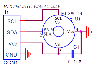
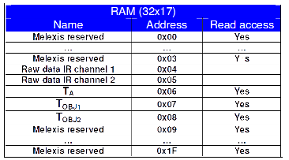
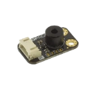

Sommaire
- LE MATERIEL
- Le capteur MLX90614: Infrared Thermometer
- Les cartes Netduino
- Les cartes FEZ
- LE LOGICIEL
1. LE MATERIEL
1.1 Le capteur MLX90614: Infrared Thermometer
- Présentation
- Caractéristiques
- Calibrage : de -40°C à 125°C pour la température ambiante TA, de -70°C à 380°C pour la température d'un objet TO
- Précision : 0,5°C (de 0 à 50°C pour TA et TO)
- Résolution : 0,02°C
- Adressage : 127 appareils
- Schéma
- Schéma interne du composant
- La RAM
- Documentation : pdf
- Distributeur : Go Tronic
Ce module capteur de température IR sans contact est basé sur un MLX90614 et comporte un convertisseur analogique-numérique
et un DSP (Digital Signal Processor) pour des résultats fiables et précis. La valeur mesurée est la température
moyenne de tous les objets dans le champ de vision du capteur. MLX90614 offre une précision standard de ± 0,5°C
autour de la température ambiante.
Sortie d'information : PWM ou SMBus (I²C)



Module MLX90614
| DFROBBOT |
|  |
| Documentation - Schéma |
1.2 Les cartes Netduino
Secret Labs
- Microcontrôleur : STM32F405RG 32 bits à architecture Cortex-M4 cadencé à 168 MHz.
- RAM : 164KB+.
- Flash : 1408KB.
- Port Ethernet : 10/100Mbps (Wifi:802.11b/g/n)*.
- E/S numériques : 22
- Entrées analogiques : 6
- Stockage: carte µSD
- IDE : Microsoft Visual Studio
- Framework : .NETMF 4.3
- Langages de programmation : C#, VB
- Compatibilité : shield Arduino, Gadgeteer
 |
 |
| Netduino 3 Ethernet | Netduino 3 wifi* |
- Sites à consulter : Netduino, NETMF
- Distributeurs : Mouser Electronics
1.3 Les cartes FEZ
GHI Electonics (Extrait)
- Microcontrôleur : 180 MHz 32-bit ARM Cortex-M4.(120 MHz 32-bit ARM Cortex-M3 )*
- SoC(SoM)* : G80 G120*
- RAM : 156 KB(2.87 MB)*.
- Flash : 256 KB (13.67 MB)*.
- E/S numériques : 53(60)*
- Entrées analogiques : 16(8)*
- Réseaux : Ethernet TCP/IP, WiFi, and SSL.
- Stockage: carte µSD
- IDE : Microsoft Visual Studio
- Framework : .NETMF 4.3
- Langages de programmation : C#, VB
 |
 |
| PANDA III | COBRA III* (compatible Gadgeteer) |
- Sites à consulter : GHI ELECTRONICS, NETMF
- Distributeurs : Mouser Electronics
2. LE LOGICIEL
2.1 Contenu du répertoire proposé au téléchargement
Le répertoire proposé au téléchargement (au format zip ou tar.gz) contient la solution MLX90614 composée :
- Du projet MLX90614: le code source de la classe MLX90614.
- Du projet Netduino: un exemple d'utilisation de cette classe avec une carte Netduino.
- Du projet FezPanda: un exemple d'utilisation de cette classe avec une carte Fez Panda.
2.2 Le NuGet MicroToolsKit
La dernière version compilée de la classe MLX90614 se situe dans la bibliothèque MicroToolsKit disponible sur nuget.org.

Organisation des classes contenues dans MicroToolsKit [lien]
Installer ce nuget dans le projet Visual Studio simplifie l'utilisation de la classe.
2.3 Les Wikis
Des wikis sont dédiés aux cartes Netduino et GHI Fez. Ils proposent au téléchargement :- Deux fascicules d'exemples de code pour les cartes Netduino. [lien]
- Un fascicule d'exemples de code pour les cartes GHI FEZ. [lien]
2.4 Description et utilisation de la classe MLX90614
- Rôle: Contrôler un capteur de température MLX90614 via un bus I²C.
- Assembly: MicroToolsKit (disponible sur nuget.org)
- Espace de noms: Microtoolskit.Hardware.Sensors
Création d'un projet avec l'IDE Visual Studio 2015
- Créer un nouveau projet en suivant la démarche décrite dans le chapitre "Premier programme en C# étape par étape" du Wiki dédié à une carte Netduino ou du Wiki dédié à une carte GHI Fez. Ces Wikis sont accessibles ici.
- Utiliser le gestionnaire de paquets NuGet pour ajouter la bibliothèque MicroToolsKit ( nuget.org) dans le projet. (Dans l'explorateur de solution, clic droit sur les Références du projet puis choisir Gérer les packages NuGet.... Installer le paquet.)
- Ajouter l'espace de noms Microtoolskit.Hardware.Sensors dans l'en-tête du fichier source.
- Créer un objet en utilisant le constructeur MLX90614.
- Utiliser la méthode Read_TA_AsCelcius pour mesurer la température de l'air et la méthode Read_Tobj_AsCelcius pour mesurer la température d'un objet et obtenir le résultat en °C.
Exemple
using System.Threading;
using Microsoft.SPOT;
using Microtoolskit.Hardware.Sensors;
namespace test
{
public class Program
{
public static void Main()
{
MLX90614 tempIR = new MLX90614();
while (true)
{
Debug.Print("Température Air = " + tempIR.Read_TA_AsCelcius().ToString("F1") + " °C");
Debug.Print("Température IR = " + tempIR.Read_Tobj_AsCelcius().ToString("F1") + " °C");
Debug.Print("---------------------");
Thread.Sleep(500);
}
}
}
}
Constructeur
| Syntaxe | Description | |
 |
MLX90614(ushort SLA, short Frequency ) | Instancie un objet "MLX90614". SLA : Addresse sur le bus I²C entre 0x01 et 0x7F. SLA= 0x5A par défaut. Frequency: Féquence du signal SCL entre 10kHz et 100kHz Frequency = 50kHz. (par défaut) Exemple MLX90614 tempIR = new MLX90614(); |
Méthodes publiques
| Syntaxe | Description | |
|
double Read_TA_AsCelcius() | Renvoi la température de l'air en °C. Note : Une exception System.IO.IOException est générée avec le message "I2CBus error + SLA" en cas d'échec de la communication. Exemple double temperature_A = tempIR.Read_TA_AsCelcius(); |
|
double Read_TA_AsFahrenheit() | Renvoi la température de l'air en °F. Note : Une exception System.IO.IOException est générée avec le message "I2CBus error + SLA" en cas d'échec de la communication. Exemple double temperature_A = tempIR.Read_TA_AsFahrenheit(); |
|
double Read_Tobj_AsCelcius() | Renvoi la température de l'objet en °C. Note : Une exception System.IO.IOException est générée avec le message "I2CBus error + SLA" en cas d'échec de la communication. Exemple double temperature_O = tempIR.Read_Tobj_AsCelcius(); |
|
double Read_Tobj_AsFahrenheit() | Renvoi la température de l'objet en °F. Note : Une exception System.IO.IOException est générée avec le message "I2CBus error + SLA" en cas d'échec de la communication. Exemple double temperature_O = tempIR.Read_Tobj_AsFahrenheit(); |